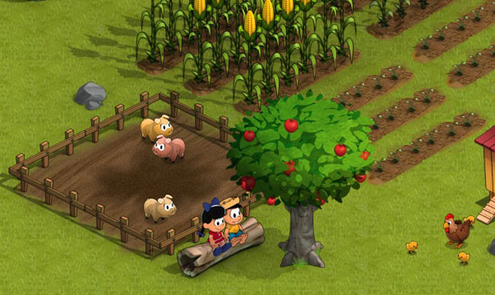
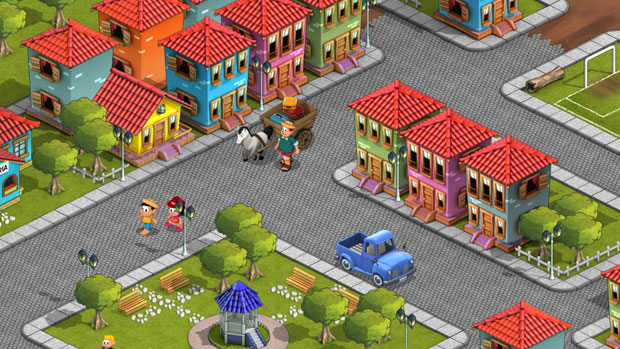

A Turma do Chico Bento trás os personagens de Mauricio de Sousa em um jogo para as redes sociais Facebook e Orkut. Em desenvolvimento pela Insólita, e publicado pela Level Up! Games, este jogo está sendo produzido por brasileiros e para um público brasileiro.

O Game Design do jogo está sendo desenvolvido pelo produtor Winston Petty, e pela Game Designer Mariana Boucault, que fez uma entrevista para o blog contanto como se tornou uma Game Designer.
Turma do Chico Bento tem características presentes em jogos como FarmVille e CityVille, ambos da Zynga. O jogo está em desenvolvimento desde o final de 2011 e atualmente está em teste fechado. Logo deverá ser lançado, e estamos torcendo para este jogo brasileiro fazer sucesso nas redes sociais.

[Chico Bento ganha jogo para redes sociais desenvolvido no Brasil, via G1]